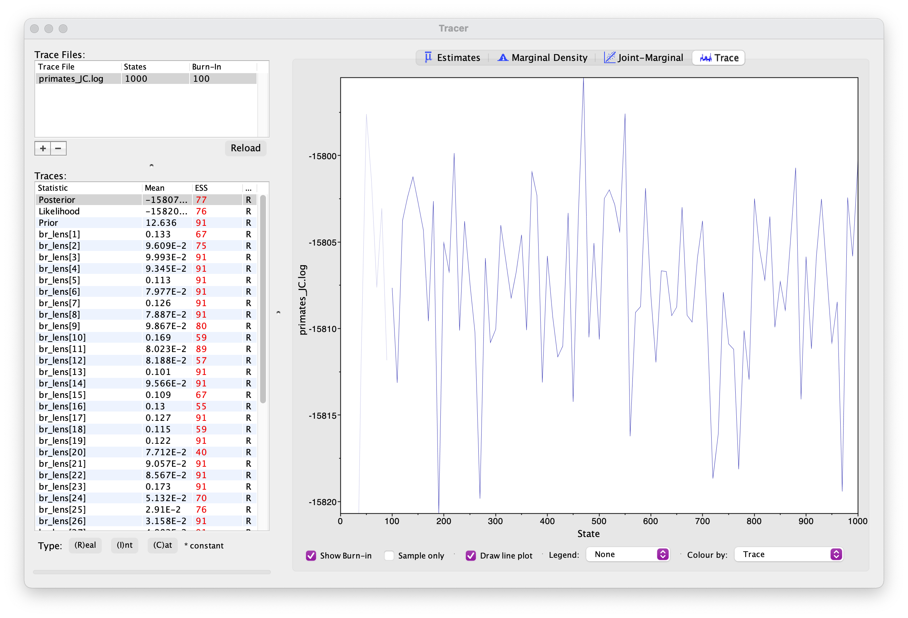
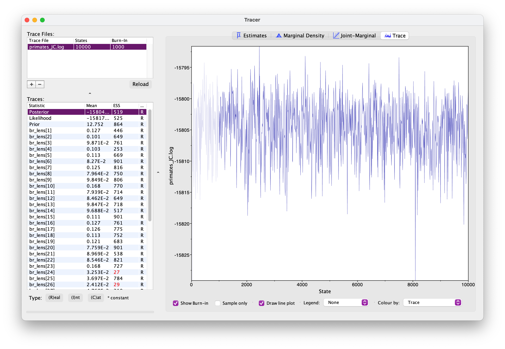
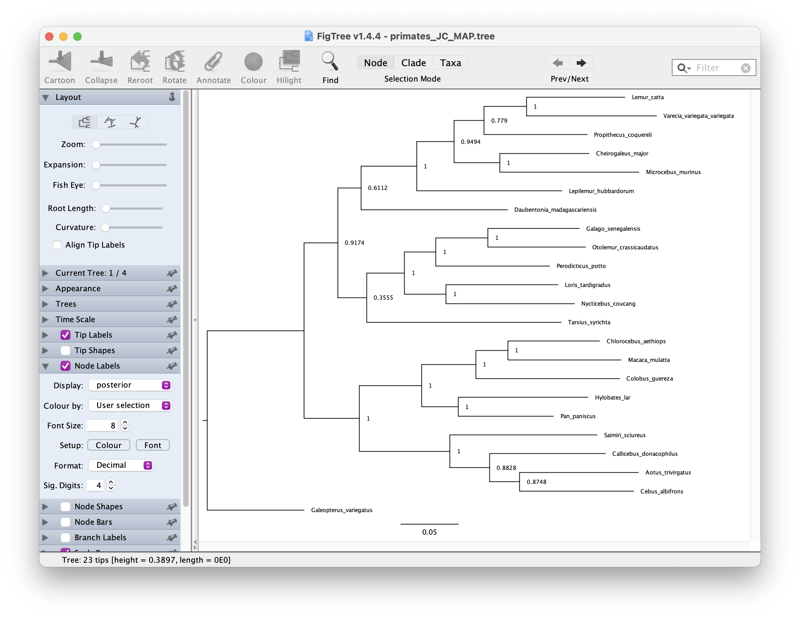

In this exercise we’ll estimate of a tree of primates using a slightly longer alignment than the one we used before \(-\) you can download this from here.
We’ll use a straightforward Bayesian approach and a standard set of substitutions models.
Before beginning, you might want to recap the distinction between constant, stochastic and deterministic variables.
Other software
For this tutorial you’ll also need to install the software Tracer and FigTree.
If you want you can use RevStudio, which is similar to RStudio but designed for RevBayes.
I personally prefer to edit scripts using a text editor and save my
files in sub-directories \(-\) usually
I have one for data, one for scripts and one for output. This can be
useful for constructing more complex and hierarchical models in a
modular fashion. You can then simply call your main script using the
command source(), in the same way as R. We’ll see an
example of this below.
For this exercise you can create a folder called
exercise 4 or something. Then create two sub-directories,
data for your nexus file and scripts for your
code. For this tutorial we’ll create at least three scripts:
main.Rev for reading the data, setting up the the tree
model and MCMC settingsJC.Rev and GTR.Rev for alternative
substitution models. Edit the scripts in a text editor of your
choice.Start with your main.Rev script. First we need to read
in the data.
data <- readDiscreteCharacterData("data/primates_and_galeopterus_cytb.nex")
dataNext we need to define some variables that will come in handy later for setting up our model.
num_taxa <- data.ntaxa() # number of taxa
num_branches <- 2 * num_taxa - 3 # number of branches in an unrooted tree
taxa <- data.taxa() # list of taxon namesNote these are constant variables.
Next we’ll define a set of variables for setting up our MCMC. Note
that we use = instead of <- because these
variables are not part of the model. The moves vector is
for storing our MCMC moves and the monitors vector is for
storing the output.
moves = VectorMoves()
monitors = VectorMonitors()For setting up regular Bayesian tree inference we need to specify two model components:
First we’ll set up the uniform tree prior in main.Rev.
The following specifies a uniform prior on the tree
topology \(-\) this means that
all possible tree configurations have the same probability
under the prior. The tree is a stochastic variable.
topology ~ dnUniformTopology(taxa)For every parameter we want to sample during MCMC we need to define
one or more appropriate moves for that parameter. The function
moves.append() adds specific moves to our
moves vector.
moves.append( mvNNI(topology, weight = num_taxa) ) # nearest neighbour interchange
moves.append( mvSPR(topology, weight = num_taxa/10.0) ) # subtree pruning and regraftingThe above moves (NNI and SPR) are widely used for searching tree space. You can read more about the details here. The weight argument tells the MCMC how much time to spend using these moves, relative to all the other moves. The weights specified above are simply a useful rule of thumb.
Next we need to specify a prior on the branch
lengths. We’ll do this using an exponetial distribution. In the
following loop, for every branch in the tree (num_branches)
we define a stochastic node using an exponetial prior distribution,
along with an appropriate move. This parameter is a continuous variable
that can be any real number value >0, so we’ll use a so-called scale
move.
for (i in 1:num_branches) {
br_lens[i] ~ dnExponential(10.0)
moves.append( mvScale(br_lens[i]) )
}The tree we’re interested in and the one we use to calculate the likelihood combines the topology and branch lengths, which we can define using a deterministic variable.
tree := treeAssembly(topology, br_lens)
treeIt might also be interesting to monitor the total tree length. We can do this by defining another deterministic node.
TL := sum(br_lens)Now that we’ve specified the tree prior, we’ll go ahead and set up
the substitution model, starting with the Jukes-Cantor model. Let’s do
this in a separate file called JC.Rev.
We’ll define a Q matrix for 4 states (A, T, G, C)
using the fnJC function. Under this model rates of change
between states and state frequencies are equal.
Q <- fnJC(4)
QNext we’ll define a stochastic node representing a sequence alignment and “clamp” that variable to our sequence data.
seq ~ dnPhyloCTMC(tree = tree, Q = Q, type = "DNA")
seq.clamp(data)This basically tells the program to calculate the likelihood for this data using the substitution model specified using the function arguments (i.e. calculate the likelihood for our tree using the JC model represented by the Q matrix). We don’t need to add any additional moves here because we’re not estimating any extra parameters.
It might seem a bit overkill to have such a small number of code lines in a separate script but as the models become more complex you’ll see why this becomes useful.
Return to your main script main.Rev and add the
following line. This tells the program to read and execute the script
containing details of the substitution model.
source("scripts/JC.Rev")Before we run the analysis we just need to finish setting up the MCMC.
Add the following line to create the variable mymodel.
This is a special variable that gets passed to the MCMC functions. We
can actually do this using any variable in our hierarchical model, I’ve
just arbitrarily used tree here.
mymodel = model(tree)
mymodelIf you look at the output you’ll see a list of all the parameters in your model. See if you can work out what they are.
Next we’ll define a set of monitors so we can record
the output. printgen specifies the frequency with which we
output or record the parameters during the MCMC run.
# parameters printed to file
monitors.append( mnModel(filename = "output/primates_JC.log", printgen = 10) )
# trees printed to file
monitors.append( mnFile(filename = "output/primates_JC.trees", printgen = 10, tree) )
# parameter values printed to screen during the MCMC
monitors.append( mnScreen(printgen = 100, TL) )Finally, we’ll set up the MCMC run using the mcmc
function, specifying our model, the vector of monitors and the vector of
moves. And then we’ll run the chain for 1000 generations.
mymcmc = mcmc(mymodel, monitors, moves)
mymcmc.run(generations = 1000)To run this analysis in RevBayes, change directory or open the
program in the directory you created for this exercise and then run the
job using the source command.
source("scripts/main.Rev")During the MCMC run, the program should have created the folder
output containing the .log and
.trees files. Open these in a text editor.
What do you make of the contents of the log and tree files?
The first thing we want to check is convergence. We
can do this using the program Tracer. Open Tracer and drag and drop your
.log file into the panel on the left or you can go to File
> Import Trace File. What you see should look something like
this.

Explore the output, including the Trace panel at the top.
What do the histograms represent? Do you think our analysis has reached convergence?
There are some indicators that our analyses haven’t converged, including the ESS values which are highlighted in orange and red, and the trace plots. This means we haven’t adequately approximated the posterior parameter space.
Let’s increase the chain length to 10000 and rerun the MCMC. This might take up to 15 minutes \(-\) while you’re waiting for this to run, you could move on and set up the GTR substitution model.
You’re already getting a flavor for how long MCMC analyses can take. It’s very common to have to run empirical analyses for millions+ generations and it can take several days for a single analysis.
Once your longer run is complete, open the file again in Tracer. Your new output should look something like this.

What differences do you notice in the output?
Actually, if wanted to use this output for publication, we’d still want to run the chain for longer because some parameters haven’t mixed well but let’s move on for now.
Back in RevBayes we can also generate summary trees. We’ll use the maximum a posteriori (MAP) tree \(-\) this is the tree with the highest posterior probability. This is just one way of summarising the posterior distribution of trees.
It is important to note the summary tree is not the “true” result \(-\) the entire posterior distribution (which might contain multiple trees) is the full result.
# read the tree file back in
treetrace = readTreeTrace("output/primates_JC.trees", treetype = "non-clock")
# generate a MAP tree
map_tree = mapTree(treetrace, "output/primates_JC_MAP.tree")You can open this tree in FigTree. Root the tree along the branch
leading to "Galeopterus_variegatus \(-\) this is our outgroup, the flying lemur.
Next let’s look at the node support. Go to Node Labels > Display >
posterior. Your output should look something like this.

Create a file called GTR.Rev where we’ll set up the
General Time Reversible (GTR) model.
Under this model both rates of change between states and state frequencies are allowed to vary. This makes it a little bit more complicated to set up - but not by much!
First we need to define a prior on the exchangeability rates (= 6) and the state frequencies. We’ll do this using a Dirichlet prior, which is a useful distribution for specifying proportions.
alpha1 <- v(1,1,1,1,1,1) # 6 for rates
alpha2 <- v(1,1,1,1) # 4 for state frequencies
er ~ dnDirichlet(alpha1)
freq ~ dnDirichlet(alpha2)alpha1 and alpha2 are the parameters of the
two Dirichlet distributions. These are used to specify uniform Dirichlet
distributions. These are stochastic variables because we want to
estimate the relative rates and state frequencies during the analysis.
We then set up the Q matrix as a deterministic variable, which will
change through the MCMC as er and freq are
updated.
Q := fnGTR(er, freq)
QThe rest of the set up is the same as before.
seq ~ dnPhyloCTMC(tree = tree, Q = Q, type = "DNA")
seq.clamp(data)Back in your main.Rev script, switch out the file used
to load the substitution model.
source("scripts/GTR.Rev")Change the name of your output files (so they don’t overwrite the exisiting files) and rerun your analysis using the GTR model.
monitors.append( mnModel(filename = "output/primates_GTR.log", printgen = 10) )
monitors.append( mnFile(filename = "output/primates_GTR.trees", printgen = 10, tree) )Once your analysis is done, you can examine both log files at the same time in Tracer.
What differences do you notice between the runs? Are there any additional parameters? Are there any differences between equivalent parameters?
Generate a new MAP tree and then compare them.
treetrace = readTreeTrace("output/primates_GTR.trees", treetype = "non-clock")
map_tree = mapTree(treetrace, "output/primates_GTR_MAP.tree")Are there any differences between the summary trees?
A complete set of scripts for this exercise can be downloaded here.